Soy una persona enfocada y disciplinada que busca oportunidades para poner en práctica sus conocimientos y habilidades, tanto técnicas como interpersonales. Disfruto participar en proyectos que me apasionen, me reten y me permitan aprender cosas nuevas constantemente.
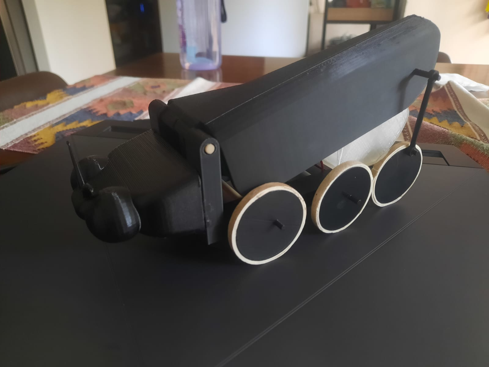
Juguete educativo inspirado en una luciérnaga diseñado para fomentar la curiosidad de los niños acerca de los mecanismos de movimiento. Utiliza un mecanismo de biela-manivela visible y un sensor de movimiento conectado a un LED para crear una experiencia interactiva.
Inventor · Arduino IDE · Bambu Lab
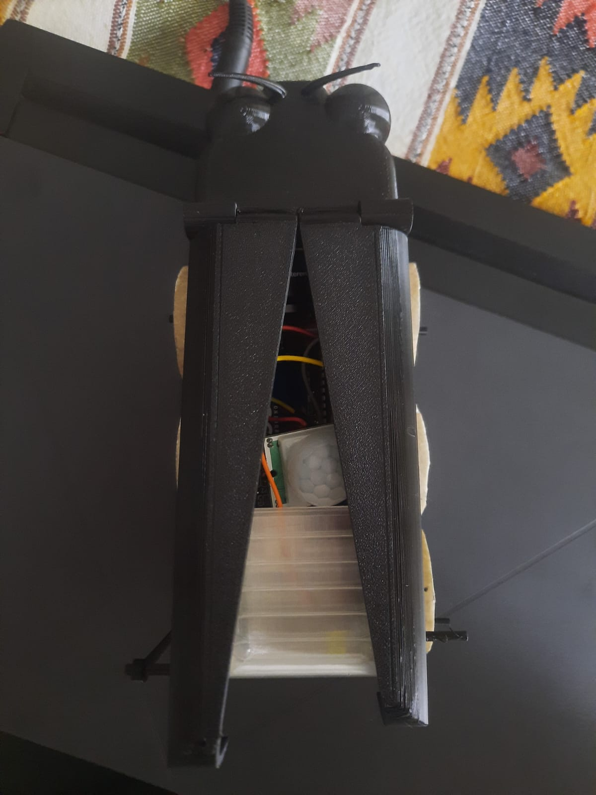
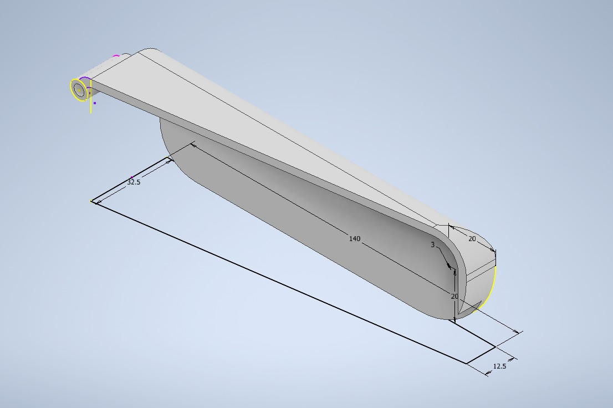
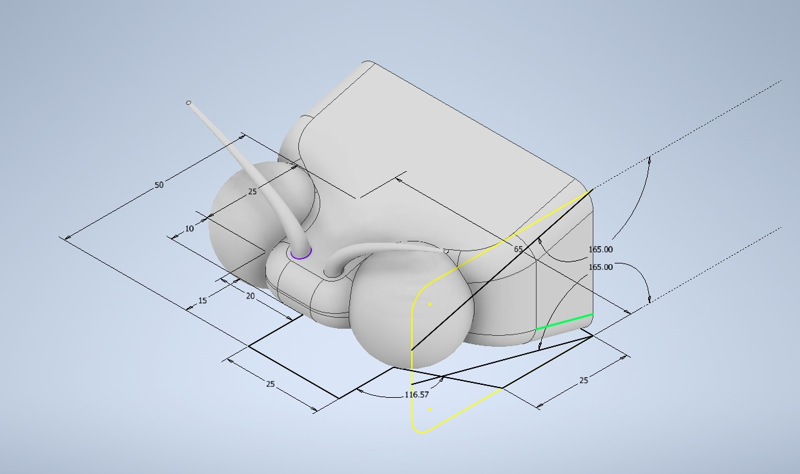
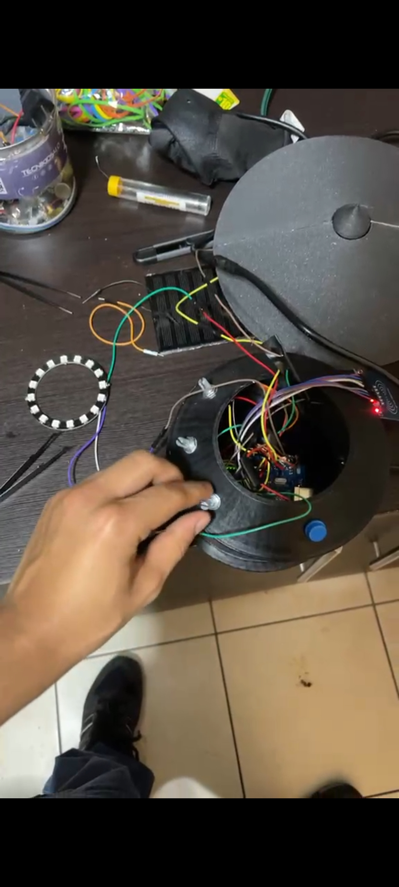
Lámpara interactiva desarrollada mediante procesos de manufactura digital e impresión 3D. Integra múltiples sensores que permiten distintos modos de interacción y una experiencia inmersiva para el usuario.
Inventor · Arduino IDE · Manufactura Digital
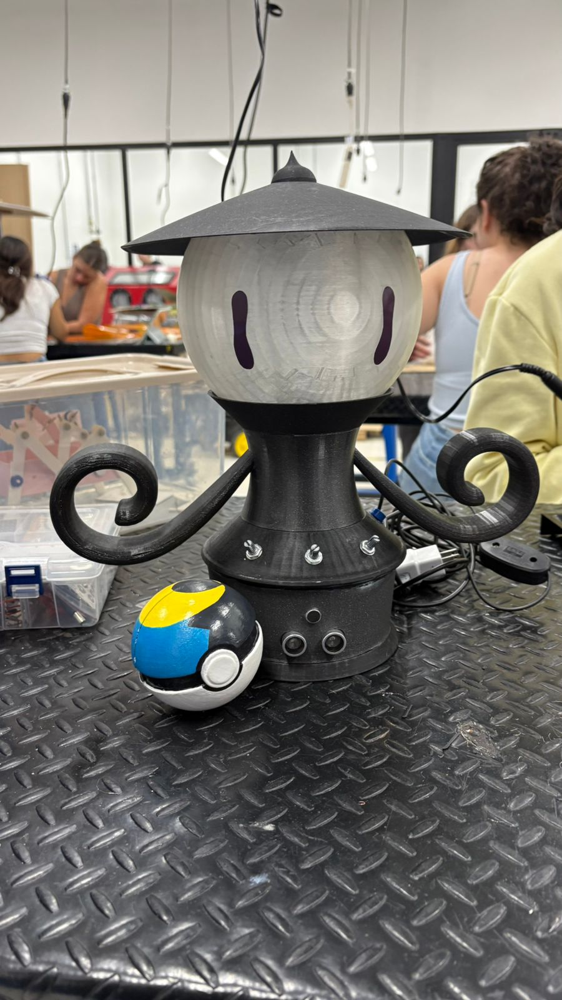
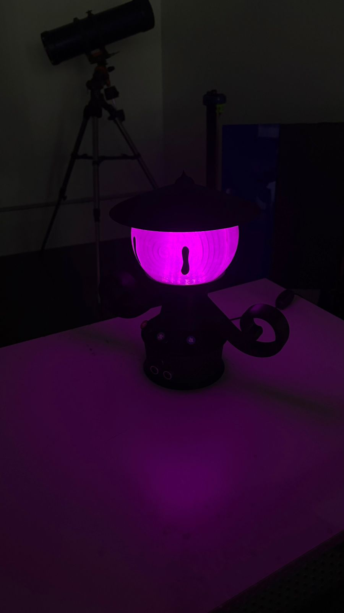
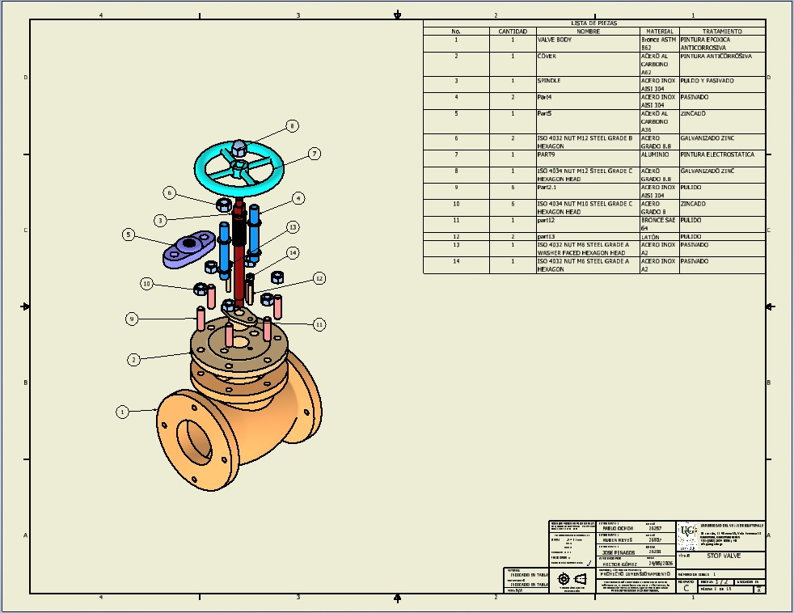
Proyecto enfocado en la aplicación de normas ANSI, dimensionamiento técnico, ensamblajes complejos y generación de vistas de detalle, sección y explosión. Participé como coordinador del grupo, supervisando materiales, ensamblajes, corrección de interferencias y revisión técnica.
Autodesk Inventor
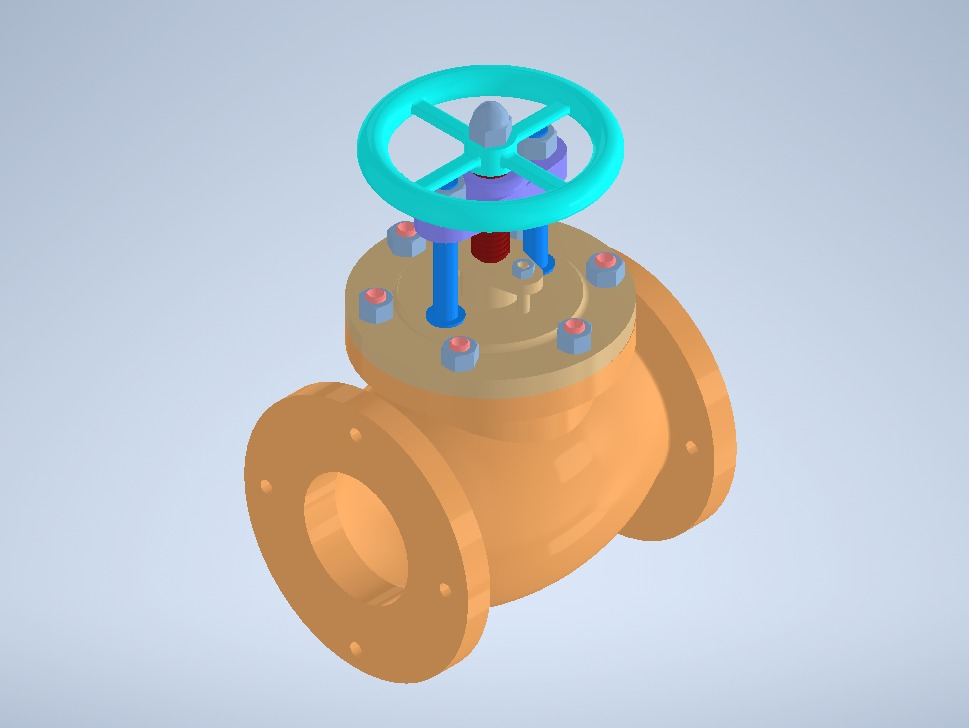
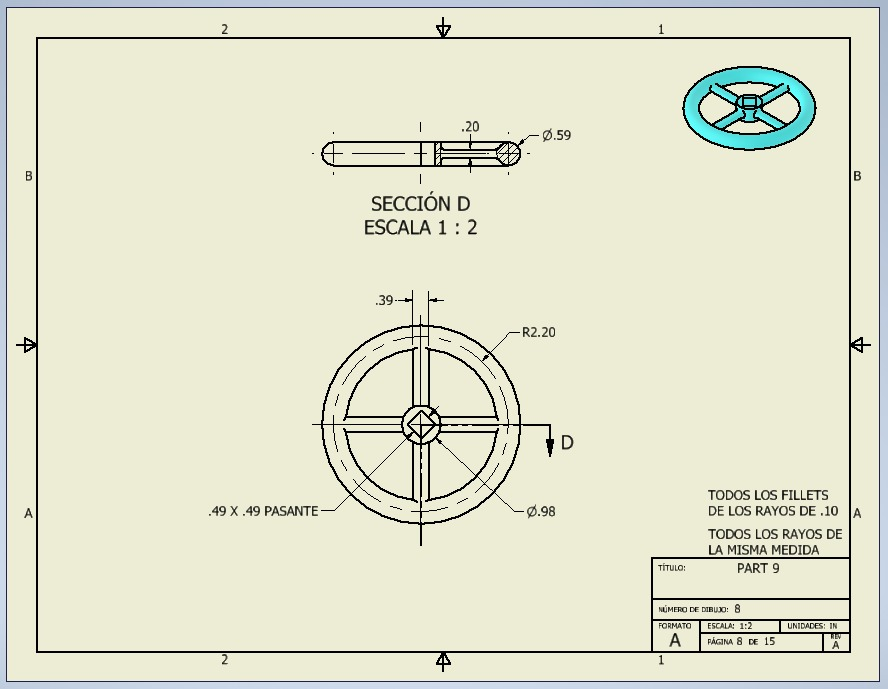
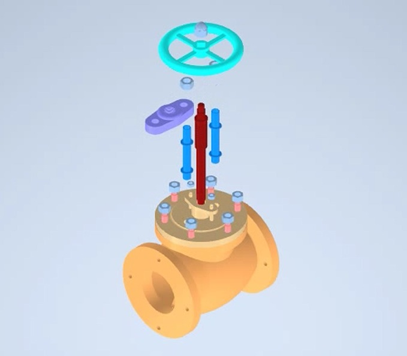
📧 pabloochoa.ptn@gmail.com